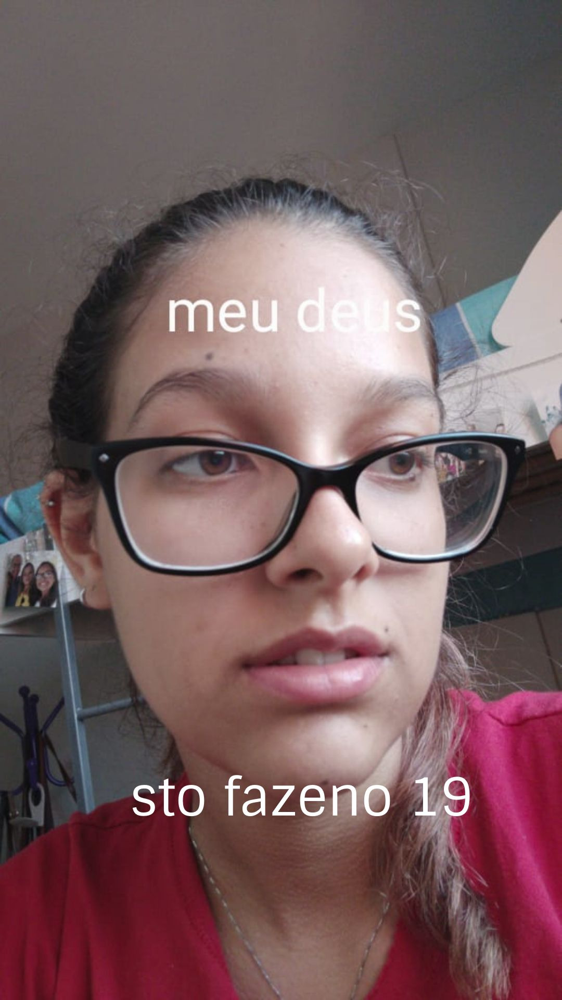

Eminhadbx

oie rsrs
então, uma parte desse textinho vai ser falando sobre a história de como I found a love for me, por favor, darling, just dive right in and follow my lead: Well, I found a girl, beautiful and sweet, e por incrível que pareça eu demorei muito pra perceber que you were the someone waiting for me. Porque? 'Cause we were just kids when we fell in love, not knowing what it was e mesmo depois desse tempo todo I will not give you up this time. But darling, just kiss me slow, your heart is all I own and in your eyes you're holding mine. Baby, I'm dancing in the dark, with you between my arms , barefoot on the grass, Listening to our favorite song, When you said you looked a mess I whispered underneath my breath but you heard it: Darling, you look perfect tonight. Não só tonight como sempre. Você, eminha, é a pessoa que eu amo com todo meu coração e essa pessoa, she's so beautiful and I tell her every day mas é bem triste porque yeah I know, I know when I compliment her she won't believe me and it's so, it's so sad to think that she don't see what I see, mas né, eu faço a minha parte: every time she asks me do I look okay I say: When I see your face, there's not a thing that I would change 'cause you're amazing, just the way you are.
Gatinha, eu não canso de dizer o quão maravilhosa você é. Deveria ser proibido alguém ser tão inteligente, ter um excelente senso de humor, ser uma pessoa que se importa com as outras, ser uma excelente namorada, uma excelente amiga, uma excelente aluna, que mesmo não gostando das coisas, faz elas todas direitinho, sem ser carregada por ninguém rsrs, ser focada e ser engajada nas coisas que faz e ainda assim ser perfeita igual você é. Obrigado por ser sempre tão companheira, seja no zipzop falando sobre coisas aleatórias na madrugada, seja indo no Unilínguas, no Palato, ou só ficando de boas olhando pro céu ou perdendo pra mim no Dominó rsrsrsrsrs. Você, eminha, é maravilhosa. Não deixe ninguém (nem você mesma rsrs) dizer o contrário; você merece o mundo inteiro pra você. Precisamos de mais pessoas como você no mundo, mais pessoas que riam como você, que sejam amigas como você, que façam outras pessoas felizes do mesmo jeito que você me faz feliz todos os dias. Como eu sempre falo, você me faz ficar apaixonado por você todos os dias, e eu pretendo continuar me apaixonando por você por muito tempo rsrs.
Te amo,
lipinhuh r3i d3l4$.